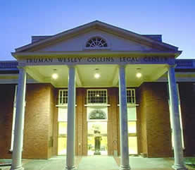

Home | Family | Educational Background | Professional Accomplishments | Community Involvement | Contact
Educational Background
During my senior year of high school, I obtained a Congressional Appointment to attend the United States Air Force Academy in Colorado Springs, Colorado. I dreamed of flying fighter jets for my Country. Sadly, due to an injury suffered during training, this was not to be. This change of circumstances took me to my next dream – the law. I knew I wanted to make a difference with regard to the law and the community in which I lived. I attended Pepperdine University and transferred to Westminster College in Salt Lake City where I graduated with honors with two majors. I received a Bachelor of Science in Business Administration and Economics as well as Behavioral Science and minored in Accounting and Aviation. I attended Willamette University College of Law and received a Juris Doctorate in 1984. I returned to Salt Lake City to take the bar exam as this would allow my wife to be close to her parents and family. I passed the Utah Bar exam and began my legal career based on my own license. In 1989, I became a member of the Nevada Bar and my family moved to Elko, Nevada in 1991. |
 |